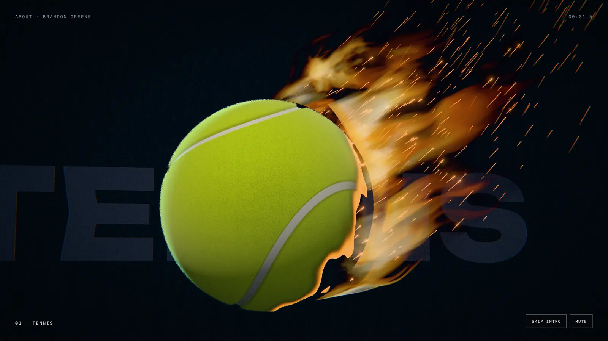
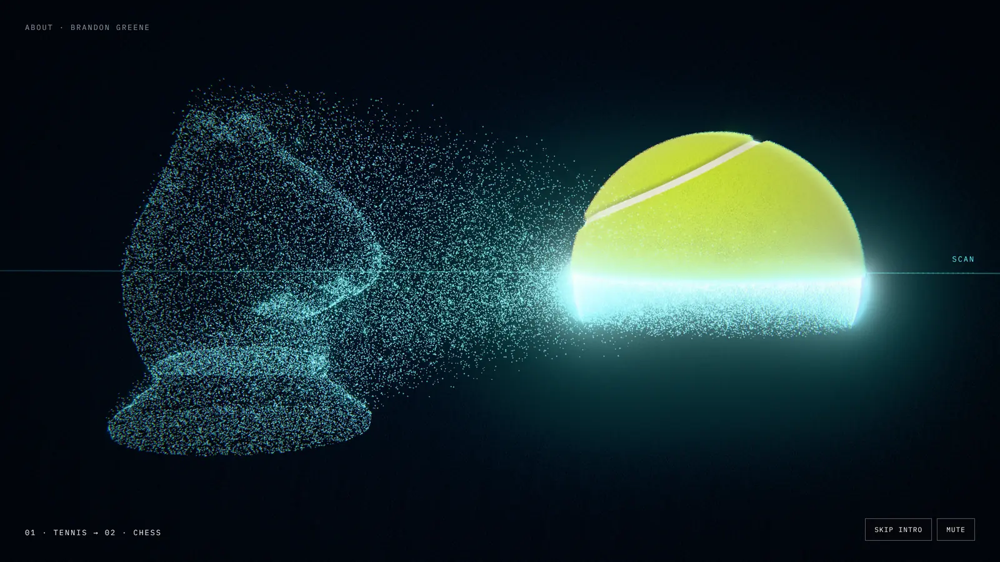

Orbit
A real tennis ball takes the hit, catches fire and is scanned into points. The points build everything you are, which then send it all back to the one thing in the middle: self-improvement. Then the page is printed into place, and every piece is a link.
Built on a branch while you slept · nothing mergedThe look: real, then scanned, then made

Real · the opening, as video
Scanned · every transition Made · the pieces print in place
Made · the pieces print in placeThe order is the foot scanner's own pipeline: capture a real thing, turn it into data, make something from it. Each look gets one job, so only one thing is ever happening.
The map: what bursts out, and what it breaks down into
Each category is a printed object: the ball for Tennis (the only optic-yellow thing, as on the rest of the site), a stack of books for School, the scanner's real calibration object for Projects, </> for Coding, a mountain ridge for Hobbies, a crescent moon for Mind. The centre is a slowly turning helix of light. Every label is something you said. Item labels are drafts for you to correct.
The score: twelve seconds
| When | What you see | What you hear |
|---|---|---|
| 0.0–1.1 | Flight. Slow motion: the ball spins through frame, fuzz lit from behind in ice. (Your real serve clip cuts in before this once it's in the Drive folder.) | A hit; the first piano note. |
| 1.1–2.7 | Ignition. The trailing side catches. Flames stream back, sparks, char racing across the felt. The camera settles as the ball comes to rest at the centre. | The catch, the fire. Voice: "I'm Brandon." |
| 2.7–4.0 | Scan. A scan line crosses the burning ball. Above it, real felt and flame (video); below it, the ball is ice-blue points (live), already peeling away. | The sweep. Voice: "Tennis," |
| 4.0–6.1 | Burst, then print. The points stream out to six places on a ring and print each object layer by layer, hot layer glowing, in turn around the ring. Each label types in as its object finishes. | Print ticks per layer. Voice: "school, the things I build, the mountains and the water." |
| 6.1–8.3 | Return to centre. A thread of light leaves each object and winds into the empty middle, building a turning helix. "Self-improvement" types in beneath it. | A rising shimmer that resolves on a chord. Voice: "All of it comes back to one thing: getting better." |
| 8.3–10.2 | Tennis opens. The ball's four items fan out on hairlines and type in. This shows people what every object does. | One soft chime per item. |
| 10.2–12.0 | Settle. Title and controls arrive. From here only the helix turns, slowly, and everything else answers the pointer. | The piano resolves; silence. |
The voiceover, drafted from your words
I'm Brandon. Tennis, school, the things I build, the mountains and the water. All of it comes back to one thing: getting better.
About eight seconds at a relaxed pace. Change any word until it sounds like you. Captions show it word for word, and the same text sits on the page as a transcript. Until you record it, the captions show alone during review and the voice slot stays off on the site.
How it becomes the page
The ending is the navigation
The seven objects stay where they printed. Each category is a real button; its items are real links. Hover or focus a category and its items fan out; tap on a phone. Tennis is open by default, so the first thing anyone sees is what happens. Below, the page's sections run in the same order as the ring.
Everyone gets a working page
- No JavaScript: the same map as nested links.
- Reduced motion: a still of the end state, with the same links. No video.
- No real GPU: the opening video still plays (it needs no GPU), then a still of the ring with live links.
- Phones: the same piece, reframed tall, with its own vertical video.
Controls
Skip is first in the tab order, and any key, wheel, click or touch skips. Mute is on screen from the first frame and is remembered. Replay afterwards. It plays once per visit.
Sound
Quiet and automatic where the browser allows; "Play with sound" where it doesn't. Effects are synthesised in code, plus your recordings once you make them; library sounds only if public domain (CC0), each one's source recorded. Music is your piano. The stand-in is an original phrase synthesised in code: no copyright.
What I need from you
A Google Drive folder, shared with me
- Your tennis video, the original files, especially any serve.
- Skiing, surfing, hiking and biking clips.
- Photos of you boxing, at the piano, swimming, coding.
I check every frame: no one else's face, no school name or logo, no signs, no place you could be found from.
Recordings (Voice Memos is fine; quiet room, phone a forearm away)
- The voiceover, three to five takes.
- Four to eight bars of piano. It has to be your own music or something out of copyright (Bach, Satie, Chopin), not a pop song.
- Five racquet hits, five ball bounces. If you can: skis on snow, a glove on a bag, a single piano key.
Risks, and what handles them
| Twenty-five things in twelve seconds is crowded. | Only seven objects are ever on screen; items appear only when a category opens. |
| A visible seam where video hands to live. | They overlap instead of cutting. The video carries the real ball through its scan while the live points peel off below the line, on the same camera and the same clock. |
| Video weight on phones. | Four seconds, encoded small (about 1–2 MB), loaded after the page is up; the first frame is a still that loads instantly. |
| Most first visits can't autoplay sound. | It's designed to work muted: captions carry the voice. |
| Privacy in your footage. | Every frame checked before use; anything doubtful is cropped or left out. |
| Honesty. | "Goal: play in college" is written as a goal. No GPA or course names in the animation. Item labels come from your words. |
| I can't check frame rate on a real GPU here. | A one-line script for your Mac does that check (step 7). |